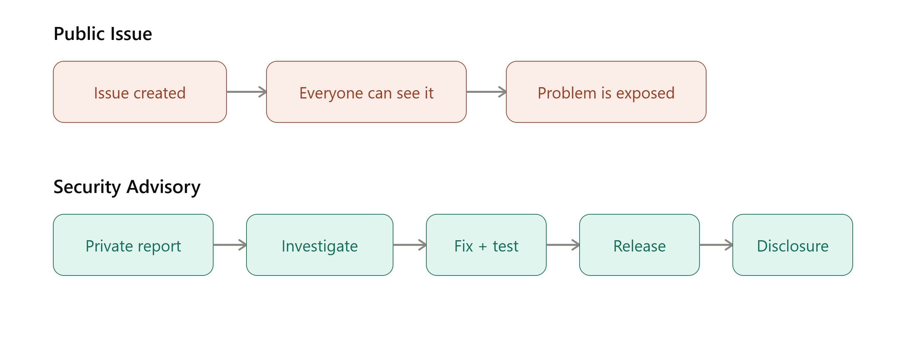
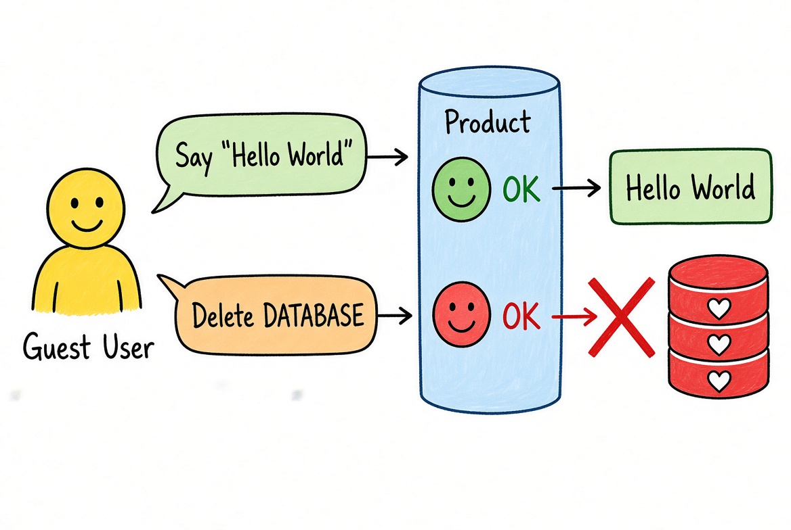
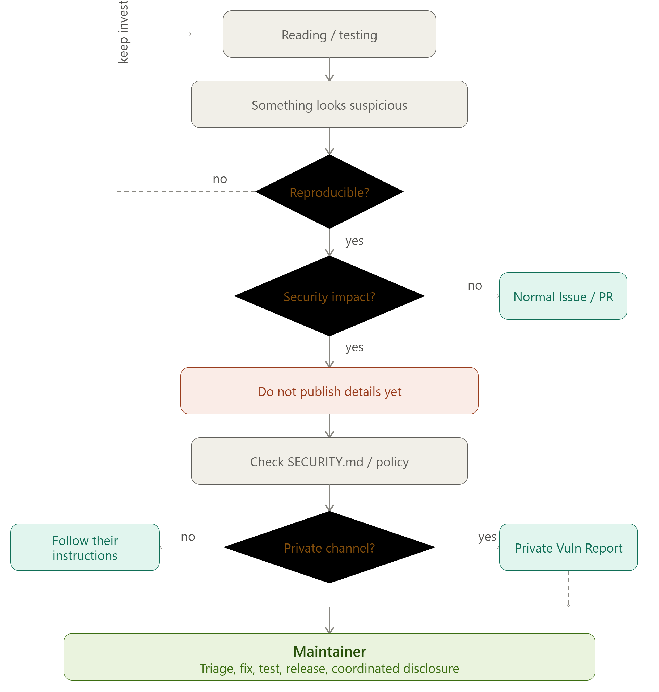

Ich habe eine Schwachstelle in einem Open-Source-Projekt gefunden. Und jetzt?
Ich habe eine Open-Source-Anwendung ausprobiert, als ich auf etwas gestoßen bin, mit dem ich nicht gerechnet hatte.
Am Anfang war es einfach dieses Gefühl: "Moment mal... sollte das gerade wirklich passieren?"
Ich habe weiter nachgeforscht und angefangen zu vermuten, dass es sich um ein Sicherheitsproblem handeln könnte.
Und da kam ein Gefühl auf, das sich deutlich von dem unterscheidet, das man hat, wenn man irgendeinen beliebigen Bug findet.
Wow.
Auf einmal war ich motiviert. Ich wollte verstehen, was da passiert, es überprüfen und, falls es wirklich eine Schwachstelle war, dabei helfen, sie zu beheben.
Aber zuerst stand das Wichtigste an: es reproduzieren.
Ich wollte keinen Verdacht und kein False Positive melden. Ich musste sicher sein, dass das Verhalten echt ist, verstehen, unter welchen Bedingungen es auftritt, und prüfen, welche Auswirkung es haben kann.
Nachdem ich es reproduziert und besser verstanden hatte, was da vor sich geht, kam die nächste Frage: Wie meldet man eigentlich verantwortungsvoll eine Schwachstelle in einem Open-Source-Projekt?
Und an dieser Stelle habe ich etwas entdeckt, das meiner Meinung nach mehr Entwicklerinnen und Entwickler kennen sollten: GitHub Security Advisories und Private Vulnerability Reporting.
Nicht jeder Bug sollte zu einem Issue werden
Wenn du in einem Open-Source-Projekt einen ganz normalen Bug findest, ist es vermutlich üblich, ein Issue zu eröffnen oder einen Pull Request vorzubereiten.
Eine Schwachstelle ist aber etwas anderes.
Wenn wir die Details eines Sicherheitsproblems sofort veröffentlichen, sorgen wir womöglich dafür, dass die Information jeden erreicht, bevor die Maintainer Zeit hatten, es zu beheben.
Und das kann besonders problematisch sein, wenn das Projekt Nutzer hat, die eine verwundbare Version einsetzen.
Deshalb gibt es das Konzept Responsible Disclosure: das Problem so zu kommunizieren, dass das Projekt eine faire Gelegenheit bekommt, es zu untersuchen und zu beheben, bevor die Details öffentlich werden.
GitHub Security Advisory
GitHub hat für genau solche Situationen ein eigenes Werkzeug: Private Vulnerability Reporting.
Die Idee finde ich ziemlich gut. Statt ein öffentliches Issue zu eröffnen, in dem es alle sehen können und das Problem offenliegt, kannst du einen privaten Kanal nutzen: Der Maintainer bekommt den Report, untersucht ihn, bereitet einen Fix vor und testet ihn, veröffentlicht ihn, und erst danach folgt die koordinierte Offenlegung.

Während dieses gesamten Prozesses bleiben die Details der Schwachstelle privat.
Und genau das finde ich an diesem Mechanismus interessant. Du versuchst nicht, unbegrenzt zu verstecken, dass es ein Problem gibt. Du gibst dem Projekt etwas sehr Wichtiges: Zeit.
Zeit, um zu verstehen, was passiert. Zeit, um eine Lösung vorzubereiten. Zeit, um sie zu testen. Und Zeit, um eine korrigierte Version zu veröffentlichen, bevor öffentlich erklärt wird, wie sich die verwundbare Version ausnutzen lässt.
Etwas, das ich unterwegs entdeckt habe: CWE
Während ich das Problem untersucht und dokumentiert habe, bin ich nebenbei auch tiefer in CWE eingestiegen, Common Weakness Enumeration.
CWE wird von MITRE gepflegt und liefert eine gemeinsame Klassifikation, um verschiedene Arten von Softwareschwächen zu beschreiben. Zum Beispiel:
- CWE-22, Path Traversal
- CWE-79, Cross-Site Scripting
- CWE-89, SQL Injection
- CWE-862, Missing Authorization
- CWE-269, Improper Privilege Management
Letzteres fand ich besonders interessant, wegen seines Bezugs zu dem Problem, das ich gefunden hatte.
CWE-269 beschreibt ganz allgemein Situationen, in denen die Privilegien eines Nutzers nicht korrekt verwaltet werden.

Und ich glaube, es gibt eine interessante Frage, die wir uns beim Thema Autorisierung stellen können: nicht nur "darf dieser Nutzer das tun?", sondern auch "was passiert, wenn er es nicht mehr darf?"
Rechte zu vergeben ist eine Operation. Sie korrekt wieder zu entziehen ebenfalls.
Was mache ich also, wenn mir so etwas begegnet?
Es gibt keinen einzigen gültigen Prozess für alle Projekte, aber das hier kann ein guter Ausgangspunkt sein:

Der erste Teil ist für mich der wichtigste: erst reproduzieren.
Etwas zu finden, das nach einer Schwachstelle aussieht, kann aufregend sein, aber es ist auch leicht, zu schnell Schlüsse zu ziehen.
Eine saubere Reproduktion verändert den Report komplett. Du sagst dann nicht mehr "ich glaube, hier könnte ein Problem sein". Du kannst sagen "ich habe dieses Verhalten unter diesen Bedingungen reproduziert, und das ist die Auswirkung, die ich beobachtet habe".
Das erleichtert den Maintainern die Arbeit enorm.
Eine Erfahrung, die mir besonders gefallen hat
Am meisten überrascht hat mich an alledem, dass das Entdecken einer Schwachstelle etwas ausgelöst hat, womit ich nicht gerechnet hatte: Lust, beizutragen.
Nicht nur das Problem zu finden und zu sagen "schaut mal, was ich gefunden habe", sondern dabei zu helfen, es zu lösen.
Und ich glaube, das ist einer der schönen Teile von Open Source. Du kannst gerade eine Anwendung benutzen, aus Neugier Code lesen oder versuchen zu verstehen, wie ein bestimmter Teil des Systems funktioniert, und plötzlich stößt du auf etwas, das es wert ist, repariert zu werden.
In diesem Moment musst du kein Security Researcher sein. Du brauchst Neugier, du musst überprüfen, was du da siehst, und, falls es wirklich ein Problem ist, es verantwortungsvoll melden.
GitHub stellt einen Teil der dafür nötigen Infrastruktur bereits bereit.
Vielleicht lohnt es sich beim nächsten Mal, wenn du auf so etwas stößt, statt direkt ein öffentliches Issue zu eröffnen, erst einmal zu suchen: SECURITY.md, Security Policy, Private Vulnerability Reporting, Security Advisory.
Vielleicht findest du einen viel besseren Weg, es zu melden. Und nebenbei kannst du dabei richtig viel lernen.